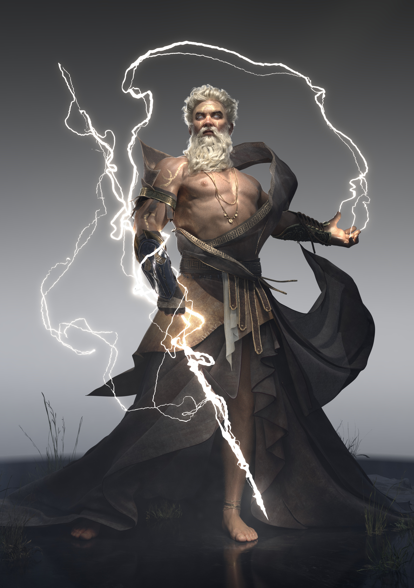
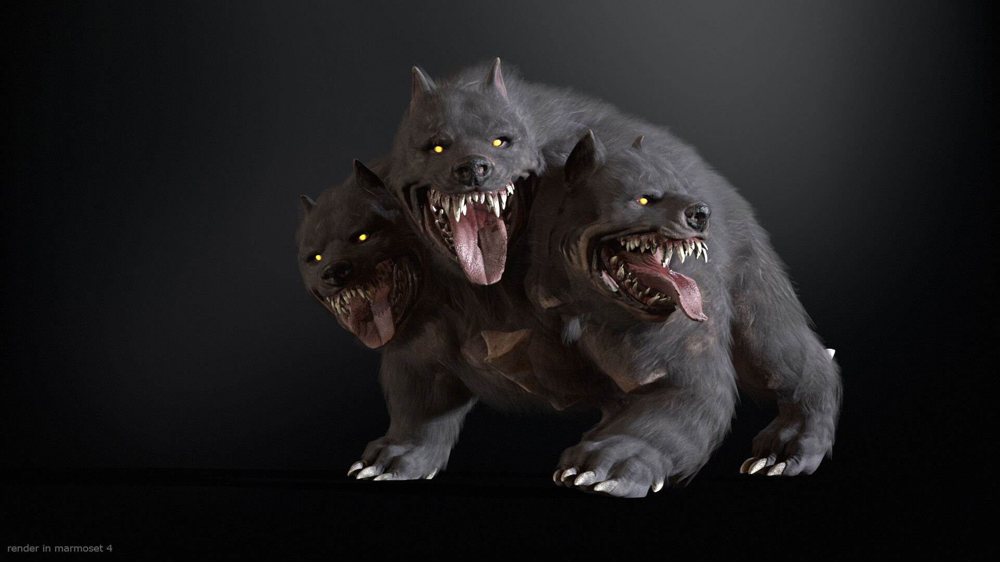

Zeus is the king of the gods in Greek mythology. He is the god of the sky, lightning, and thunder. He is also the ruler of the Olympian gods.
An Ent is a tree-like creature. They are tall, slow, and patient creatures. They are also known as shepherds of the trees.
The Cyclops is a one-eyed giant in Greek mythology. They are known for their strength and size. They are also known for their ability to forge weapons.
Pegasus is a winged horse in Greek mythology. He is the son of Poseidon and Medusa. He is known for his speed and ability to fly.
A Centaur is a creature with the upper body of a human and the lower body of a horse. They are known for their speed and strength.

The Manticore is a mythical creature with the body of a lion, the head of a human, and the tail of a scorpion. They are known for their speed and agility.
A Driad is a tree nymph in Greek mythology. They are known for their beauty and grace. They are also known for their connection to nature.
Cerberus is a three-headed dog in Greek mythology. He is the guardian of the Underworld. He is known for his ferocity and strength.
Charon is the ferryman of the Underworld in Greek mythology. He is responsible for carrying the souls of the dead across the river Styx to the Underworld.
A Satyr is a creature with the upper body of a human and the lower body of a goat. They are known for their love of music and dance. They are also known for their mischievous nature.
The Minotaur is a creature with the body of a man and the head of a bull. He is known for his strength and was famously kept in the Labyrinth of Crete.
Medusa was the most famous of the Gorgons. She was once a beautiful maiden, but was transformed into a monster as punishment by the goddess Athena.